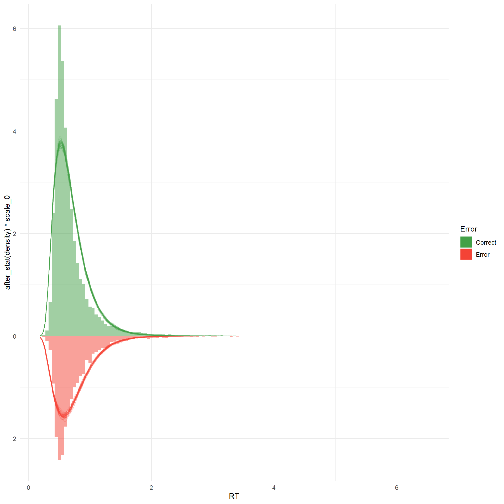
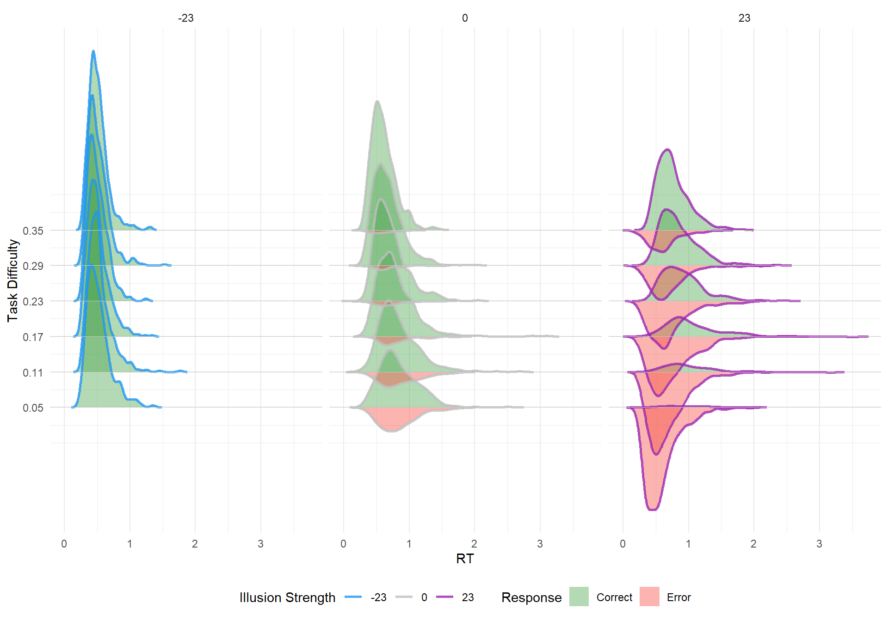
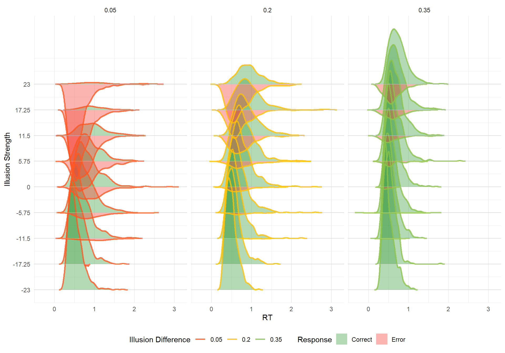
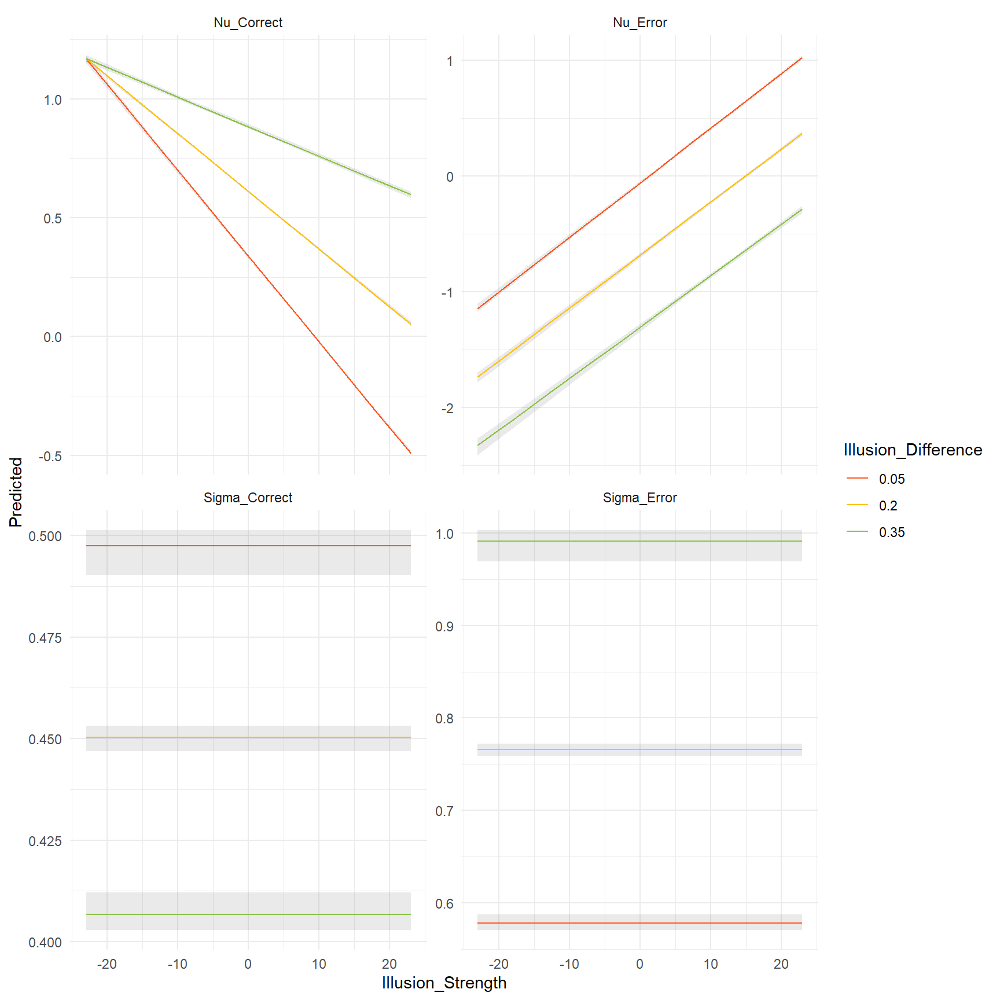

Code
library(tidyverse)
library(easystats)
library(brms)
library(rstan)
library(patchwork)
library(ggside)
library(ggdist)library(tidyverse)
library(easystats)
library(brms)
library(rstan)
library(patchwork)
library(ggside)
library(ggdist)m_lnr_muller <- readRDS("models/m_lnr_muller.rds")pred <- modelbased::estimate_prediction(m_lnr_muller, keep_iterations = 50) |>
mutate(Error = as.factor(Error))
pred_rt <- pred[pred$Component == "rt", ]
pred_resp <- pred[pred$Component == "response", ]
pred_long <- bayestestR::reshape_iterations(pred_rt) |>
rename(pred_RT = iter_value) |>
full_join(
bayestestR::reshape_iterations(pred_resp) |>
mutate(pred_Response = as.factor(iter_value)) |>
select(pred_Response, iter_group, iter_index),
by = c("iter_group", "iter_index")
)
n_obs_0 <- sum(pred$Error == 0)
n_pred_0 <- sum(pred_long$pred_Response == 0) / n_distinct(pred_long$iter_group)
scale_0 <- n_obs_0 / n_pred_0
pred |>
ggplot(aes(x = RT)) +
geom_histogram(
data = filter(pred, Error == 0),
aes(y = after_stat(density) * scale_0, fill = Error),
binwidth = 0.05, alpha = 0.5
) +
geom_histogram(
data = filter(pred, Error == 1),
aes(y = -after_stat(density), fill = Error),
binwidth = 0.05, alpha = 0.5
) +
geom_line(
data = filter(pred_long, pred_Response == 0),
aes(
x = pred_RT, y = after_stat(density) * scale_0,
group = interaction(iter_group, pred_Response), color = pred_Response
),
stat = "density", alpha = 0.2
) +
geom_line(
data = filter(pred_long, pred_Response == 1),
aes(
x = pred_RT, y = -after_stat(density),
group = interaction(iter_group, pred_Response), color = pred_Response
),
stat = "density", alpha = 0.2
) +
scale_fill_manual(values = c("0" = "#43A047", "1" = "#F44336"), labels = c("0" = "Correct", "1" = "Error")) +
scale_color_manual(values = c("0" = "#43A047", "1" = "#F44336"), labels = c("0" = "Correct", "1" = "Error")) +
scale_y_continuous(labels = abs) +
guides(fill = guide_legend(override.aes = list(alpha = 1)), color = "none") +
theme_minimal()
plot_effect_densities <- function(model, datagrid, y_var = "Illusion_Difference") {
if(y_var == "Illusion_Difference") {
color_var <- "Illusion_Strength"
cols <- c("#2196F3", "grey", "#9C27B0")
} else {
color_var <- "Illusion_Difference"
cols <- c("#FF5722", "#FFC107", "#8BC34A")
}
# Step 0: Get predictions and reshape
pred <- modelbased::estimate_prediction(model, data = datagrid, keep_iterations = 500) |>
mutate(!!sym(color_var) := as.factor(.data[[color_var]]))
pred_rt <- pred[pred$Component == "rt", ]
pred_resp <- pred[pred$Component == "response", ]
pred_long <- bayestestR::reshape_iterations(pred_rt) |>
rename(pred_RT = iter_value) |>
full_join(
bayestestR::reshape_iterations(pred_resp) |>
mutate(pred_Response = as.factor(iter_value)) |>
select(pred_Response, iter_group, iter_index),
by = c("iter_group", "iter_index")
)
# Step 1: Compute density per y_var x color_var x pred_Response
dens_data <- pred_long |>
# Group by the specified dynamic variables
group_by(.data[[y_var]], .data[[color_var]]) |>
mutate(n_total = n()) |>
# Add response to the grouping
group_by(.data[[y_var]], .data[[color_var]], pred_Response) |>
filter(n() >= 2) |>
reframe(
prop = n() / first(n_total),
x = density(pred_RT)$x,
y = density(pred_RT)$y * prop
) |>
mutate(y = if_else(pred_Response == 0, y, -y))
# Step 2: Scale and offset by y_var level
id_levels <- sort(unique(as.numeric(dens_data[[y_var]])))
# Safety check in case you pass a variable with only 1 level
if (length(id_levels) > 1) {
scale_factor <- 1.5 * min(diff(id_levels))
} else {
scale_factor <- 1.5
}
dens_data <- dens_data |>
mutate(
y_offset = as.numeric(.data[[y_var]]),
y_scaled = y_offset + y * scale_factor
)
# Step 3: Plot
p <- dens_data |>
ggplot(aes(
x = x,
y = y_scaled,
group = interaction(.data[[y_var]], .data[[color_var]], pred_Response),
color = as.factor(.data[[color_var]]),
fill = factor(pred_Response)
)) +
geom_ribbon(
aes(ymin = y_offset, ymax = y_scaled),
alpha = 0.4,
color = NA
) +
geom_line(alpha = 0.8, linewidth = 1) +
geom_hline(
data = tibble(y = id_levels),
aes(yintercept = y),
inherit.aes = FALSE,
color = "grey80", linewidth = 0.3
) +
scale_y_continuous(
breaks = id_levels,
labels = id_levels
) +
scale_color_manual(values = cols) +
scale_fill_manual(
values = c("0" = "#43A047", "1" = "#F44336"),
labels = c("0" = "Correct", "1" = "Error")
) +
labs(
x = "RT",
y = ifelse(y_var == "Illusion_Strength", "Illusion Strength", "Task Difficulty"),
color = gsub("_", " ", color_var),
fill = "Response"
) +
theme_minimal() +
theme(legend.position = "bottom") +
facet_wrap(vars(.data[[color_var]]))
p
}
plot_effect_densities(
model = m_lnr_muller,
datagrid = insight::get_datagrid(m_lnr_muller, length = c(Illusion_Difference = 6, Illusion_Strength = 3)),
y_var = "Illusion_Difference"
)
plot_effect_densities(
model = m_lnr_muller,
datagrid = insight::get_datagrid(m_lnr_muller, length = c(Illusion_Difference = 3, Illusion_Strength = 9)),
y_var = "Illusion_Strength"
)
pred <- rbind(
estimate_relation(m_lnr_muller, length = c(Illusion_Difference = 3, Illusion_Strength = 10), predict = "mu") |>
mutate(Parameter = "Nu_Correct"),
estimate_relation(m_lnr_muller, length = c(Illusion_Difference = 3, Illusion_Strength = 10), predict = "nuone") |>
mutate(Parameter = "Nu_Error"),
estimate_relation(m_lnr_muller, length = c(Illusion_Difference = 3, Illusion_Strength = 10), predict = "sigmazero") |>
mutate(Parameter = "Sigma_Correct"),
estimate_relation(m_lnr_muller, length = c(Illusion_Difference = 3, Illusion_Strength = 10), predict = "sigmaone") |>
mutate(Parameter = "Sigma_Error")
)
pred |>
mutate(Illusion_Difference = as.factor(Illusion_Difference)) |>
ggplot(aes(x = Illusion_Strength, y = Predicted)) +
geom_ribbon(aes(ymin = CI_low, ymax = CI_high, group = Illusion_Difference), alpha = 0.1) +
geom_line(aes(color = Illusion_Difference, group = Illusion_Difference)) +
scale_color_manual(values = c("#FF5722", "#FFC107", "#8BC34A")) +
facet_wrap(~Parameter, scales = "free_y") +
theme_minimal()